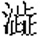

这也并非自己的发见，是在内山书店里听着漫谈的时候拾来的，据说：像日本人那样的喜欢“结论”的民族，就是无论是听议论，是读书，如果得不到结论，心里总不舒服的民族，在现在的世上，好像是颇为少有的，云。
接收了这一个结论之后，就时时令人觉得很不错。例如关于中国人，也就是这样的。明治时代的支那研究的结论，似乎大抵受着英国的什么人做的《支那人气质》[132]的影响，但到近来，却也有了面目一新的结论了。一个旅行者走进了下野的有钱的大官的书斋，看见有许多很贵的砚石，便说中国是“文雅的国度”；一个观察者到上海来一下，买几种猥亵的书和图画，再去寻寻奇怪的观览物事，便说中国是“色情的国度”。连江苏和浙江方面，大吃竹笋的事，也算作色情心理的表现的一个证据。[133]然而广东和北京等处，因为竹少，所以并不怎么吃竹笋。倘到穷文人的家里或者寓里去，不但无所谓书斋，连砚石也不过用着两角钱一块的家伙。一看见这样的事，先前的结论就通不过去了，所以观察者也就有些窘，不得不另外摘出什么适当的结论来。于是这一回，是说支那很难懂得，支那是“谜的国度”了。
据我自己想：只要是地位，尤其是利害一不相同，则两国之间不消说，就是同国的人们之间，也不容易互相了解的。
例如罢，中国向西洋派遣过许多留学生，其中有一位先生，好像也并不怎样喜欢研究西洋，于是提出了关于中国文学的什么论文，使那边的学者大吃一惊，得了博士的学位，回来了。然而因为在外国研究得太长久，忘记了中国的事情，回国之后，就只好来教授西洋文学。他一看见本国里乞丐之多，非常诧异，慨叹道：他们为什么不去研究学问，却自甘堕落的呢？所以下等人实在是无可救药的。
不过这是极端的例子。倘使长久的生活于一地方，接触着这地方的人民，尤其是接触，感得了那精神，认真的想一想，那么，对于那国度，恐怕也未必不能了解罢。
著者是二十年以上，生活于中国，到各处去旅行，接触了各阶级的人们的，所以来写这样的漫文，我以为实在是适当的人物。事实胜于雄辩，这些漫文，不是的确放着一种异彩吗？自己也常常去听漫谈，其实是负有捧场的权利和义务的，但因为已是很久的“老朋友”了，所以也想添几句坏话在这里。其一，是有多说中国的优点的倾向，这是和我的意见相反的，不过著者那一面，也自有他的意见，所以没有法子想。还有一点，是并非坏话也说不定的，就是读起那漫文来，往往颇有令人觉得“原来如此”的处所，而这令人觉得“原来如此”的处所，归根结蒂，也还是结论。幸而卷末没有明记着“第几章：结论”，所以仍不失为漫谈，总算还好的。
然而即使力说是漫谈，著者的用心，还是在将中国的一部分的真相，绍介给日本的读者的。但是，在现在，总依然是因了各种的读者，那结果也不一样罢。这是没有法子的事。据我看来，日本和中国的人们之间，是一定会有互相了解的时候的。新近的报章上，虽然又在竭力的说着“亲善”呀，“提携”呀[134]，到得明年，也不知道又将说些什么话，但总而言之，现在却不是这时候。
倒不如看看漫文，还要有意思一点罢。
一九三五年三月五日鲁迅记于上海。
注 释
[131] 本篇最初印入《活中国的姿态》。
《活中国的姿态》，日本内山完造著，1935年11月东京学艺书院出版；有尤炳圻的中文译本，书名改为《一个日本人的中国观》，1936年8月开明书店出版。本篇原以日文写成，由作者自译为中文，参看本书《后记》。
内山完造（1885—1959） 日本人。1913年来华，先经营药品，后在上海开设内山书店，经售日文书籍。1927年10月与鲁迅结识后常有交往，1945年回国。
[132] 《支那人气质》 长期旅居中国的美国传教士斯密斯（A.H.Smith，1845—1932）著，日本有

江保译本，1896年东京博文馆出版。参看《华盖集续编·马上支日记（七月二日）》。[133] 指日本安冈秀夫著《从小说看来的支那民族性》（1926年4月东京聚芳阁出版）一书中对中国人的随意诬蔑。该书《耽享乐而淫风炽盛》一篇中甚至说：“彼国人的嗜笋……也许是因为那挺然翘然的姿势，引起想像来的罢。”参看《华盖集续编·马上支日记（七月二日、四日）》。
[134] “亲善”、“提携” 1935年1月日本外相广田弘毅在议会发表“中日亲善”、“经济提携”的演说，以欺骗中日人民。蒋介石于2月1日就此发表谈话：“此次日本广田外相在其议会所发表对我国之演词，吾人认为亦具诚意，吾国朝野对此当有深刻之谅解……制裁一切冲动及反日行为，以示信谊。”在这以前，1934年5月间日本公使有吉明已经与黄郛在上海进行“中日亲善”谈判；6月间有吉明又到南京见汪精卫，商谈“中日提携”问题。